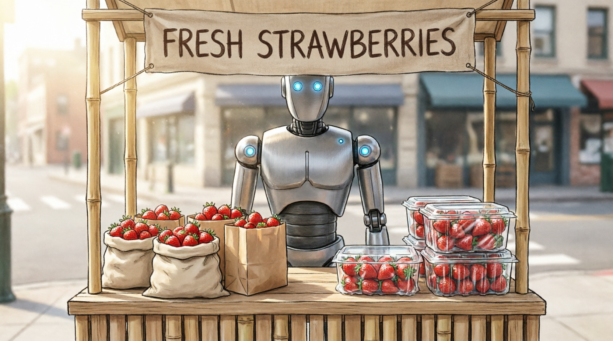

I recently bought strawberries in China. They came in a beautiful plastic package, and that package was also wrapped in Saran wrap.
Not far from the shop, a slogan painted on the wall read: "Sorting the waste is a small step to civilized living."
Something about that pairing nagged at me on the way home.

You are probably used to thinking of waste as a problem you can solve at the bin. Sort paper from glass, plastic from compost — and the world improves a little. It is a satisfying idea. It gives the problem a shape you can hold in your hands.
But let me suggest a different picture. When a strawberry arrives double-wrapped in plastic, the waste is not created at the moment you throw it away. It was created the moment a designer chose that packaging, a factory produced it, and a consumer found it more appealing than a naked strawberry in a paper bag. The bin is just where we finally notice.
This is the difference between a symptom and a cause. Taking Alka-Seltzer after a night of drinking is not the same thing as drinking less. Brushing your teeth after every sweet is not the same thing as eating fewer sweets. Both work, to a point. Neither solves the underlying problem.
Who bears responsibility? The producer, certainly — they chose the excess. But the consumer chose to prefer it. That is the honest part: many of us find better-packaged goods more appealing. Less packaging can feel like less product. And so we arrive at a genuine impasse: the ecological goal and the consumer's preference point in opposite directions, and no slogan about sorting will resolve that tension.
Now look at Chinese consumerism from another angle — not as a problem but as a mechanism.
People here hunt for deals with extraordinary energy. Coupon codes, flash discounts, platform wars, group-buying schemes. The whole thing has the feeling of a game, complete with scores and winners. Why does this happen? Not because Chinese people are uniquely acquisitive, but because competition is what people do when they perceive that their needs — for status, security, belonging — are better met by outperforming others. Remove the scarcity (real or perceived), and the competition changes shape.
This is worth holding onto, because it suggests something. The same competitive machinery that drives people to hunt for the cheapest strawberries could, in principle, be redirected. If the scoring system rewarded low-packaging choices, people would compete for those. This is not wishful thinking — it is an observation about how behavior actually works. Rules shape games. Change the rules, change the game.
The catch is that competition requires something to compare. If every product becomes equally sustainable, the competitive edge vanishes. The mechanism works only as long as there is a difference worth chasing.
Now take a longer view.
Robots and AI already produce most manufactured goods more efficiently than humans. That frontier is advancing rapidly — not just in factories, but in logistics, translation, accounting, legal drafting, medical imaging. The trend is clear even if the end point is uncertain. At some point, it becomes difficult to answer the question: what exactly is human labor for, in economic terms?
You might expect the answer to be "nothing." But that is probably not right either. People may still pay for genuinely human things — a conversation with another person who actually listens, a piece of furniture made by a craftsman's hands, a meal cooked with visible care. These have a quality that is not about efficiency. They are valuable precisely because a human chose to make them. But these are exceptions, not engines. They cannot organize a whole economy.
In a world where basic needs are met by automated systems — and there are already small-scale experiments in this direction, from pilot guaranteed-income programs to subsidized housing schemes — mass competition for jobs loses its urgency. People no longer need to outrun each other just to eat and stay warm. The competitive pressure shifts: between nations, perhaps, competing for technological prestige; and within individuals, competing against their own past selves, for the private satisfaction of growth.
Here is where something important happens to meaning.
You are probably used to thinking of satisfaction as the reward for winning a competition. Work hard, earn more, buy better things, feel better. Meaning arrives when you close the gap between where you are and where you want to be.
But notice: meaning requires a gap. Stories need something unresolved. Goals need distance to cover. Even love — perhaps especially love — depends on the fact that the other person is not fully known, that the relationship is still becoming something. A world with no gaps is not a world of perfect satisfaction. It is a blank world. Nothing presses. Nothing moves.
This is not a paradox unique to post-scarcity futures. It is a structural feature of experience itself. Every need, once met, reveals a new one beneath it. This is not a failure of human nature — it is simply how consciousness works. The engine runs on disequilibrium. Perfect equilibrium is not peace; it is stillness of a kind that has no use for us at all.
So the society of total abundance, if it ever arrives, will not produce contentment. It will produce a new kind of restlessness — more private, more inward, less connected to the old machinery of mass consumption and status competition. People will compare themselves to their own history, not to their neighbors. The competitive game will shrink from a public arena to an interior one.
All of which brings us back to the strawberry.
We are not, in the end, at the decisive moment of ecological crisis because we sort or do not sort our rubbish. We are here because we are midway through a transition — from a world organized around mass production, mass competition, and mass consumption, toward something not yet fully formed, in which individual experience becomes more central and collective comparison less urgent.
The old engine — produce more, sell more, compete harder — generates the packaging problem as a side effect. It is not malice. It is mechanics. A system optimized for exchange will produce things designed to be exchanged, in quantities optimized for exchange, wrapped in materials that make exchange feel valuable. Sorting the waste after the fact is not the answer to that system. Reducing what the system produces is.
This does not mean sorting is useless. A small local resolution of a specific tension is still worth doing — it is better than not doing it. But we should see it for what it is: a downstream measure in a system that has not yet changed its upstream logic.
The real question is not how to clean up after the old engine. It is how to preserve meaning and agency — for ourselves, for other people, for the creatures who share our planet — while that engine gradually winds down and something else, something we can barely describe yet, takes its place.
We are not at the end of that story. We are somewhere in the middle, holding a plastic-wrapped strawberry, wondering what to do with the packaging.
Home Page